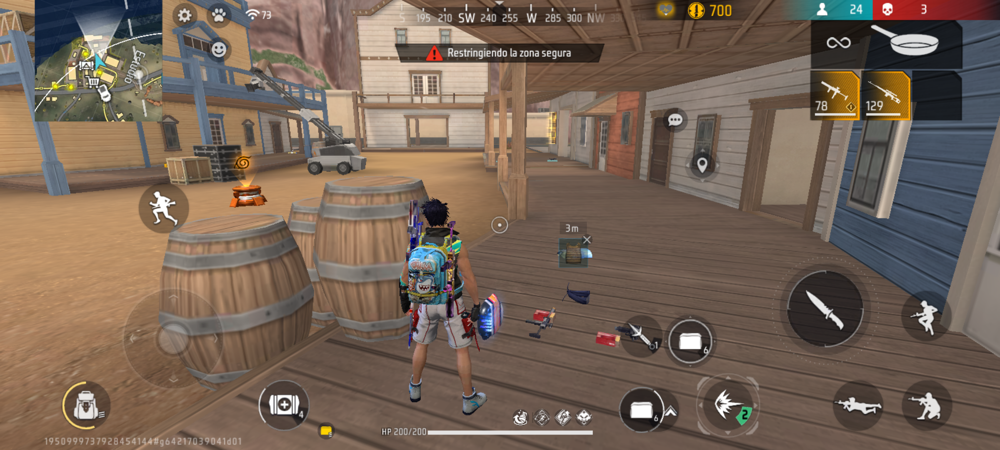

¿Qué es Free Fire?
Free Fire es un juego de Batalla Real en línea para móviles desarrollado por 111 Dots Studio y publicado por Garena.
El juego se juega en un mapa donde hasta 50 jugadores se enfrentan en un entorno de supervivencia, con el objetivo de ser el último jugador o equipo en pie.
Los jugadores pueden elegir entre diferentes modos de juego, como:
Modo de Supervivencia: Los jugadores se enfrentan en un mapa grande y deben sobrevivir el mayor tiempo posible.
Modo de Equipo: Los jugadores se dividen en equipos y deben trabajar juntos para ganar.
Algunos Personajes y sus Habilidades


"RYDEN"
Lanza una araña que atrapa al enemigo con su telaraña
Lo utilizas cuando tengas un enemigo cerca
Enlace"KASSIE"
Te conectas con un compañero mediante unos hilos de energía
Ambos reciben vida extra
EnlaceConsejos para jugar Free Fire
¿Es tu primera vez jugando? Tranquilo, aquí te van un par de consejos:
Elige un lugar seguro para aterrizar.

Recoge armas y suministros rápidamente.
Utiliza el mapa para orientarte y planificar tus movimientos.
Escucha atentamente los sonidos del juego para detectar enemigos cercanos.
Utiliza las habilidades de tu personaje para obtener ventajas en combate.
Siempre mantente en movimiento para evitar ser un blanco fácil.
Recoge las monedas y objetos especiales que encuentres en el mapa.
Estas te ayudarán a mejorar tu equipo y habilidades.
Juega en equipo si es posible, la comunicación es clave.
Practica con diferentes armas para familiarizarte con su manejo además puedes utilizar la tienda.

Recoge todo lo que más puedas para equipar bien tus armas y tu mochila
Evita el fuego cruzado y busca cobertura siempre que sea posible.
Evita el combate innecesario al principio, concéntrate en equiparte bien.
Usa las coberturas del entorno para protegerte de los disparos.
Recuerda que la zona segura se reduce con el tiempo, así que mantente alerta.
Diviértete y aprende de cada partida. ¡La experiencia es lo que te hará mejorar!
Recuerda, la práctica hace al maestro. ¡Diviértete jugando Free Fire!
Si quieres aprender más sobre Free Fire, visita la página oficial del juego.
Página OficialSi quieres ver más personajes, visita la página de personajes de Free Fire.
Página de Personajes¡Agosto Nuevo Parche!
¡Nuevo parche de Agosto! Conoce las novedades y cambios en el juego:
Vuelve la Colaboración con Naruto Shippuden, Capítulo 2
¡Nuevos personajes, armas, y mucho más!
¡No te pierdas las novedades de este mes!
Si quieres ver el tráiler del nuevo parche, haz clic en el siguiente video
¡Puedes ver el SHOW DE KELLY, y enterarte de todo lo NUEVO!
Si quieres descargar el juego, haz clic en el siguiente enlace
Descargar Free Fire